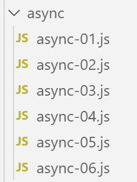

11. Event-driven programming and asynchronous functions

An asynchronous function is a function whose execution is initiated but whose result is not awaited. When execution is complete, the asynchronous function emits an event and transmits its result via that event.
This mode of operation is well-suited for execution within a web browser. Indeed, an application running within a browser is an event-driven application: the application reacts to events, primarily triggered by the user (clicks, mouse movements, text input, etc.). JavaScript applications running within a browser interact with external services via the HTTP protocol. JavaScript’s native HTTP functions are asynchronous: they are initiated, and the receipt of a response from the requested external service is signaled by an event that is added to the set of events managed by the application.
The following scripts will be executed by [node.js] and not by a browser. [node.js] also has an event-driven execution model:
- [node.js], like a browser, uses an event loop to execute a script;
- execution of the script’s main code is the first event executed;
- if this main code has launched asynchronous tasks, execution continues until these asynchronous tasks are completed. These tasks emit an event when they are finished. These events are queued in the event loop;
- the main script must subscribe to these events if it wants to retrieve the results of the asynchronous actions;
- the script is not finished until all events it has emitted have been processed;
11.1. script [async-01]
The following script demonstrates the behavior of a script containing an asynchronous action.
'use strict';
// imports
import moment from 'moment';
import { sprintf } from 'sprintf-js';
// start
const scriptStart = moment(Date.now());
console.log("[start of script],", time());
// setTimeout sets a timer for 1000 ms (2nd parameter) and immediately returns the timer ID
// when the timer has elapsed 1000 ms, it emits an event that is queued by the runtime
// When the event is processed by the runtime, the function (first parameter) is executed
setTimeout(function () {
// this code will be executed when the timer reaches 0
console.log("[end of setTimeout asynchronous action],", time(scriptStart));
}, 1000)
// will be displayed before the message from the timer's internal function
console.log("[end of main script code],", time(scriptStart));
// Utility function to display time and duration
function time(start) {
// current time
const now = moment(Date.now());
// time formatting
let result = "time=" + now.format("HH:mm:ss:SSS");
// Do we need to calculate a duration?
if (start) {
const duration = now - start;
const milliseconds = duration % 1000;
const seconds = Math.floor(duration / 1000);
// Format time + duration
result = result + sprintf(", duration= %s seconds and %s milliseconds", seconds, milliseconds);
}
// result
return result;
}
- line 4: we import the [moment] library to format dates (line 27);
- line 5: import the [sprintf-js] library to format durations (line 34);
- line 8: we record the script's start time;
- line 9: we display it using the [time] method in lines 20–34;
- lines 14–17: the [setTimeout] function has two parameters (f, duration): f is a function that is executed when [duration] milliseconds have elapsed;
- line 14: when the script runs, the [setTimeout] function is executed:
- line 17: a 1000 ms timer is started and the countdown begins until it eventually reaches 0. The [setTimeout] function completes as soon as the timer is initialized and the countdown begins. It does not wait for the countdown to end. It returns an ID number for the timer used, and execution moves on to the next instruction, line 20. Here, the result of [setTimeout] is not used;
- line 16: this message will be displayed at the end of the 1000 ms delay of the [setTimeout] function;
- lines 15–16: the function f, the first parameter of the [setTimeout] function, will be executed at the end of the 1000 ms delay. The message on line 16 will then be displayed;
- line 20: this message will be displayed before the one on line 16;
Time function:
- line 23: the function accepts an optional parameter [time], which is the start time of an operation whose duration it must display;
- lines 25–27: the current time is calculated and formatted;
- line 29: if the [start] parameter is present, then a duration must be calculated;
- line 30: the duration of the operation. This results in a number of milliseconds;
- lines 31–32: this number of milliseconds is broken down into seconds and milliseconds;
- line 34: the duration is added to the time;
Execution
[Running] C:\myprograms\laragon-lite\bin\nodejs\node-v10\node.exe -r esm "c:\Data\st-2019\dev\es6\javascript\async\async-01.js"
[start of script], time=09:26:40:238
[end of main script code], time=09:26:40:246, duration= 0 second(s) and 11 milliseconds
[end of async action setTimeout], time=09:26:41:249, duration= 1 second(s) and 14 milliseconds
[Done] exited with code=0 in 1.672 seconds
- line 4, we can see that the asynchronous action [setTimeout] finished approximately 1 second after the end of the script's main code;
- Line 6: The time displayed on line 3 is the time when the main code finishes. If the main code has initiated asynchronous tasks, the script is not complete until all asynchronous tasks have been executed. The duration displayed on line 6 is the total execution time of the script (main code + asynchronous tasks);
The [setTimeout] function will allow us to simulate asynchronous tasks in a [node.js] environment. In fact, the [setTimeout] function behaves like an asynchronous task:
- it returns a result immediately—in this case, a timer ID—using the standard function mechanism (return);
- it may later (which is not yet the case above) return other results via events that are then processed by the [node.js] event loop;
- in most of the cases that follow, there will be two such events:
- an event that could be called [success], which will be emitted by the asynchronous task that successfully completed its operation. A piece of data—the task’s result—is associated with the emitted event;
- an event that could be called [failure], which is emitted by the asynchronous task that failed to complete its task. A piece of data—typically an object describing the error—is associated with the emitted event. Possible errors with an asynchronous internet task, for example, would be ‘network unavailable’, ‘server machine does not exist’, ‘timeout exceeded’, ...
- the main code that launched an asynchronous task can subscribe to the events that this task is likely to emit. When one of these is emitted, the main code is notified and can trigger the execution of a specific function designed to handle the event. This function receives, as a parameter, the data that the asynchronous task associated with the emitted event;
11.2. script [async-02]
In this script, the asynchronous function [setTimeout] will emit events to communicate data to the code that has subscribed to them.
Accessing [node.js] events requires additional libraries. We choose the [events] library, which we install using [npm]:

The [async-02] script is as follows:
'use strict';
// Asynchronous functions can return a result by emitting an event
// the main code can retrieve these results by subscribing to the emitted events
// imports
import moment from 'moment';
import { sprintf } from 'sprintf-js';
import EventEmitter from 'events';
// start
const scriptStart = moment(Date.now());
console.log("[start of script],", time());
// an event emitter
const eventEmitter = new EventEmitter();
// setTimeout sets a timer for 1000 ms (2nd parameter) and immediately returns the timer ID
// when the timer has elapsed 1000 ms, it emits an event that is queued by the runtime
// When the event is processed by the runtime, the function (first parameter) is executed
setTimeout(function () {
// This code will be executed when the timer reaches 0
console.log("[setTimeout, end of 1-second timer],", time(scriptStart));
// we emit an event to indicate that a result is available
eventEmitter.emit("timer1Success", { success: 4 });
// We emit another event to indicate that another result is available
eventEmitter.emit("timer1Failure", { failure: 6 });
}, 1000)
// subscribe to the [timer1Success] event
eventEmitter.on('timer1Success', (result) => {
console.log(sprintf("The timer's asynchronous function returned the result [%j], %s, via the [timer1Success] event", result, time(scriptStart)));
});
// subscribe to the [timer1Failure] event
eventEmitter.on('timer1Failure', (result) => {
console.log(sprintf("The timer's asynchronous function returned the result [%j], %s, via the [timer1Failure] event", result, time(scriptStart)));
});
// will be displayed before the messages from events emitted by the function associated with [timer1]
console.log("[end of main script code],", time(scriptStart));
// utility for displaying time and duration
function time(start) {
// current time
const now = moment(Date.now());
// time formatting
let result = "time=" + now.format("HH:mm:ss:SSS");
// Do we need to calculate a duration?
if (start) {
const duration = now - start;
const milliseconds = duration % 1000;
const seconds = Math.floor(duration / 1000);
// Format time + duration
result = result + sprintf(", duration= %s seconds and %s milliseconds", seconds, milliseconds);
}
// result
return result;
}
Comments
- line 9: we import the [EventEmitter] class from the [events] library. This is new: until now, we had only imported literal objects and functions;
- line 15: we create a [node.js] event emitter by instantiating the [EventEmitter] class with the [new] keyword;
- Lines 20–27: the asynchronous function [setTimeout]. It will emit two events when executed:
- line 24, the [timer1Success] event with the object {success: 4} as its associated value;
- line 26, the [timer1Failure] event with the object {failure: 6} as its associated value;
- an asynchronous function can emit as many events as it wants. We mentioned earlier that most often it emits one of the two events [success, failure], not both as we are doing here;
- line 20: the execution of [setTimeout] is instantaneous: a timer is set and its ID is returned to the calling code. The events will be emitted later, in this case 1 second later;
- triggering events is pointless if there is no code to handle them when they occur. This is why the main code must subscribe to both events [timer1Success, timer1Failure] if it wants to handle them, specifically to retrieve the data associated with these events;
- Lines 30–32: The main code subscribes to the [timer1Success] event. When the [node.js] event listener processes this event, it will call the function that is the second parameter of the [eventEmitter.on] method, passing it the data (here called [result]) associated with the [timer1Success] event;
- line 31: the event handler function will display the JSON of the data associated with the event as well as the current time;
- lines 35–37: using similar code, the main code subscribes to the [timer1Failure] event;
- Subscribing to an event (first parameter) does not immediately execute the code of the [callback] function (second parameter). This function will only be executed after the event has occurred;
- line 40: the main code of the script has finished, but the script itself has not, since the main code launched an asynchronous task. The overall script will not finish until this asynchronous task has completed;
This is what the results show:
[Running] C:\myprograms\laragon-lite\bin\nodejs\node-v10\node.exe -r esm "c:\Data\st-2019\dev\es6\javascript\async\async-02.js"
[start of script], time=09:34:58:909
[end of main script code], time=09:34:58:916, duration= 0 second(s) and 10 milliseconds
[setTimeout, end of 1-second timer], time=09:34:59:929, duration= 1 second(s) and 23 milliseconds
the timer's asynchronous function returned the result [{"success":4}], time=09:34:59:931, duration= 1 second(s) and 25 milliseconds, via the [timer1Success] event
The timer's asynchronous function returned the result [{"failure":6}], time=09:34:59:932, duration= 1 second(s) and 26 milliseconds, via the [timer1Failure] event
[Done] exited with code=0 in 1.627 seconds
- line 3: end of the main code 10 ms after the script started;
- line 4: start of the function encapsulated in the 1000 ms timer, approximately 1 second after the script starts;
- line 5: processing of the [‘timer1Success’] event, 2 ms later;
- line 6: processing of the [‘timer1Failure’] event, 1 ms later than the [‘timer1Success’] event;
- line 8: end of the global script with a total duration of 1.627 seconds;
11.3. script [async-03]
The following script demonstrates another aspect of the [node.js] event loop:
- the loop executes events one after another, generally in the order they arrive. Some operating systems assign priorities to events, which are then processed in order of priority rather than order of arrival;
- the loop executes only one event at a time. The next event is processed only after the previous one has finished. In an event-driven system, you should therefore avoid writing code that monopolizes the processor for long periods, as events will not be processed when they occur but later when the event loop reaches them. This results in an application that is not very “responsive”;
The script [async-03] demonstrates an example of this phenomenon:
'use strict';
// Asynchronous functions can return a result by emitting an event
// the main code can retrieve these results by subscribing to the emitted events
// imports
import moment from 'moment';
import { sprintf } from 'sprintf-js';
import EventEmitter from 'events';
// start
const scriptStart = moment(Date.now());
console.log("[start of script],", time());
// an event emitter
const eventEmitter = new EventEmitter();
// setTimeout sets a timer for 1000 ms (second parameter) and immediately returns the timer's ID
// When the timer has elapsed 1000 ms, it emits an event that is queued by the runtime
// When the event is processed by the runtime, the function (first parameter) is executed
setTimeout(function () {
// This code will be executed when the timer reaches 0
console.log("[setTimeout, end of 1-second timer],", time(scriptStart));
// we emit an event to indicate that a result is available
eventEmitter.emit("timer1Success", { success: 4 });
// We emit another event to indicate that another result is available
eventEmitter.emit("timer1Failure", { failure: 6 });
}, 1000)
// subscribe to the [timer1Success] event
eventEmitter.on('timer1Success', (result) => {
console.log(sprintf("The timer's asynchronous function returned the result [%j], %s, via the [timer1Success] event", result, time(scriptStart)));
});
// subscribe to the [timer1Failure] event
eventEmitter.on('timer1Failure', (result) => {
console.log(sprintf("The timer's asynchronous function returned the result [%j], %s, via the [timer1Failure] event", result, time(scriptStart)));
});
// A somewhat intensive synchronous code that prevents the main code from finishing before [timer1] ends
for (let i = 0; i < 1000000; i++) {
for (let j = 0; j < 10000; j++) {
i + i ^ 2 + i ^ 3;
}
}
// will be displayed before the messages from the events emitted by the function associated with [timer1]
console.log("[end of script],", time(startScript));
// utility for displaying time and duration
function time(start) {
...
}
Comments
- This code is from the previous example [async-02], to which lines 39–44 have been added;
- Lines 20–27: The [setTimeout] function has been programmed to execute an internal asynchronous function after a delay of one second. After this second has elapsed, the execution of the timer’s asynchronous function does not occur immediately: an event is placed in the execution loop to request it. If the execution loop is busy processing another event, the execution of the timer’s asynchronous function will have to wait;
- lines 20–27: as soon as the [setTimeout] function has set its timer for a one-second delay, it releases the processor and returns control to the calling code. The calling code continues with lines 30–37, which are event subscriptions and have negligible execution time;
- the main code continues with lines 40–44, which form a loop of 1,010 iterations. This code will be in execution when the timer triggers its “end of 1-second delay” event. This event is then placed in the event loop but must wait for the main script code to finish executing before it can be processed;
- Line 47: end of the script’s main code. It is after this final display that the timer end event can be processed and the internal asynchronous function of [setTimeout] can be executed;
The script produces the following results:
[Running] C:\myprograms\laragon-lite\bin\nodejs\node-v10\node.exe -r esm "c:\Data\st-2019\dev\es6\javascript\async\async-03.js"
[start of script], time=08:55:02:665
[end of main script code], time=08:55:11:789, duration= 9 seconds and 131 milliseconds
[setTimeout, end of 1-second timer], time=08:55:11:794, duration= 9 seconds and 136 milliseconds
the timer's asynchronous function returned the result [{"success":4}], time=08:55:11:794, duration= 9 seconds and 136 milliseconds, via the [timer1Success] event
The timer's asynchronous function returned the result [{"failure":6}], time=08:55:11:794, duration= 9 seconds and 136 milliseconds, via the [timer1Failure] event
[Done] exited with code=0 in 9.796 seconds
Comments
- line 3: we see that the script’s main code took 9 seconds to execute. Any events that occurred during this time were queued in the event loop;
- line 4: we see that the [timer end] event was processed 5 ms after the main code finished. It was emitted approximately 1 s after the script started but had to wait an additional 8 s to finally be processed;
The key takeaway from this example is that in an event-driven system, code should never occupy the processor for very long. If you have synchronous code that takes a long time to execute, you must find a way to break it down into shorter asynchronous tasks that signal their completion with an event.
11.4. script [async-04]
The [async-04] script demonstrates another mechanism, called [Promise], a promise of a result. This mechanism avoids the need to explicitly handle [node.js] events. It is handled implicitly, and the developer can therefore ignore the existence of these events. Understanding them, however, will help the developer better grasp how [Promise] works, which is complex at first glance.
The [Promise] type is a JavaScript class. Its constructor accepts an asynchronous function as a parameter, to which it passes two parameters traditionally called [resolve] and [reject]. They could have different names;
- the [Promise] constructor does two things:
- it creates an event to trigger the execution of the [function(resolve, reject)] function passed to it as a parameter, but does not wait for its result and immediately returns a [Promise] object to the calling code. This object can have four states:
- [pending]: the asynchronous action that returned the [Promise] is not yet complete;
- [fulfilled]: the asynchronous action that returned the [Promise] has completed successfully;
- [rejected]: the asynchronous action that returned the [Promise] has failed;
- [settled]: the asynchronous action that returned the [Promise] has completed;
- it creates an event to trigger the execution of the [function(resolve, reject)] function passed to it as a parameter, but does not wait for its result and immediately returns a [Promise] object to the calling code. This object can have four states:
When the constructor returns its result, the created [Promise] object is in the [pending] state, awaiting the results of the asynchronous function;
- (continued)
- the asynchronous task in lines 2–5 is launched immediately. Asynchronous tasks are most often input/output tasks that break down as follows:
- execution of synchronous code to initiate the I/O operation with another component, such as a remote server;
- waiting for a response from that component;
- processing of this response;
- the asynchronous task in lines 2–5 is launched immediately. Asynchronous tasks are most often input/output tasks that break down as follows:
Phase 2—waiting for the external component—is the most resource-intensive. Rather than waiting:
- the receipt of the data requested from the external component will be signaled by an event;
- in the synchronous code that follows phase 1 (line 7 of the example code), we will subscribe to this event and then, at some point, return to the [node.js] event loop. The next event in the list of pending events will then be processed;
- during phase 2, there is parallel execution but on different devices:
- the processor for the event loop;
- an external component (disk, database, remote server) for retrieving the requested data;
- At the end of phase 2, once the I/O operation has obtained the data it requested, an event will be triggered to indicate that the I/O result is available. This event will then join the others in the event queue;
- when its turn comes, it will be processed. The function associated with this event (line 7 of the example code) will then be executed;
This mode of operation helps avoid downtime: the situation where the processor waits for a response from a device that is slower than itself;
- (continued)
- once the asynchronous task in lines 2 and 5 has been launched and has completed its work, it can return a result to the calling code using the two functions [resolve, reject] that the [Promise] constructor passed to it as parameters. The convention is as follows:
- the asynchronous task signals success via [resolve(result)]. This amounts to adding an event to the [node.js] event loop that could be called [resolved], with [result] as the associated data;
- the asynchronous task signals a failure via [reject(error)]. This amounts to adding an event to the [node.js] event loop that could be called [rejected], with [error] as the associated data—typically an object detailing the error that occurred;
- the calling code must therefore subscribe to these two events to be notified when the result of the asynchronous function becomes available;
- once the asynchronous task in lines 2 and 5 has been launched and has completed its work, it can return a result to the calling code using the two functions [resolve, reject] that the [Promise] constructor passed to it as parameters. The convention is as follows:
After the asynchronous task encapsulated in the [Promise] has finished executing, the state of the [promise] object returned by the [Promise(…)] constructor changes:
- the [resolved] event changes its state from [pending] to [resolved];
- the [rejected] event changes it from the [pending] state to [rejected];
Subscribing to the [resolved] and [rejected] events of the asynchronous task is done using methods of the [Promise] class with the following syntax:
promise.then(f1).catch(f2).finally(f3);
where:
- f1 is a function executed when the [promise] state changes from [pending] to [resolved], i.e., when the asynchronous task has successfully completed its work. It receives the value [result] as a parameter, passed by the [resolve(result)] statement of the asynchronous task;
- f2 is a function executed when the state of [promise] changes from [pending] to [rejected], i.e., when the asynchronous task has failed to complete its work. It receives the value [error] as a parameter, passed by the [reject(error)] statement of the asynchronous task;
- f3 is a function executed after the [then] or [catch] methods have been executed, so it is always executed. It receives no parameters;
This syntax completely hides the events to which we subscribe. However, it is a subscription, and like the one in the previous example, it does not immediately execute the functions [f1, f2, f3]. These will be executed—or not—when one of the events [resolved, rejected] to which we subscribe occurs.
The [async-04] script demonstrates this mechanism:
'use strict';
// it is possible to obtain the results (success, failure) of an asynchronous function
// without explicitly using events, thanks to the [Promise] class
// this class implicitly uses events, but these are not visible in the code
// imports
import moment from 'moment';
import { sprintf } from 'sprintf-js';
// start
const scriptStart = moment(Date.now());
console.log("[script start],", time(startScript));
// Define an asynchronous task using a Promise
// The asynchronous task is the constructor parameter [Promise]
const startPromise1 = moment(Date.now());
const promise1 = new Promise(function (resolve) {
// log
console.log("[start of promise1's asynchronous function],", time(startPromise1));
// asynchronous code
setTimeout(function () {
console.log("[end of promise1's asynchronous function],", time(startPromise1));
// the asynchronous task returns a result using the [resolve] function
// the promise is then fulfilled
resolve('[success]');
}, 1000)
});
// we can find out the result of the promise [promise1]
// once it has been resolved or rejected
// the following statement subscribes to the [resolved] event via the [then] method
// and to the [rejected] event via the [catch] method
// the [finally] method is executed whether after a then or a catch
promise1.then(result => {
// if the promise succeeds [resolved event]
console.log(sprintf("[promise1.then], %s, result=%s", time(startPromise2), result));
}).catch(result => {
// error case [evt rejected]
console.log(sprintf("[promise1.catch], %s, result=%s", time(startPromise2), result));
}).finally(() => {
// executed in all cases
console.log("[promise1.finally]", time(startPromise1));
});
// Defining an asynchronous task using a promise [Promise]
const startPromise2 = moment(Date.now());
const promise2 = new Promise(function (resolve, reject) {
// log
console.log("[start of promise2 asynchronous function],", time(startPromise1));
// asynchronous task
setTimeout(function () {
console.log("[end of Promise2's asynchronous function],", time(startPromise2));
// the asynchronous task returns a result using the [reject] function
// the promise is then rejected
reject('[failure]');
}, 2000)
});
// We can determine the result of the promise [promise2]
// once it has been resolved or rejected
promise2.then(result => {
// if the promise is fulfilled [evt resolved]
console.log(sprintf("[promise2.then], %s, result=%s", time(startPromise2), result));
}).catch(result => {
// error case [evt rejected]
console.log(sprintf("[promise2.catch], %s, result=%s", time(startPromise2), result));
}).finally(() => {
// executed in all cases
console.log(sprintf("[promise2.finally], %s", time(startPromise2)));
});
// will be displayed before the messages from the asynchronous functions and those from the associated events
console.log("[end of main script code],", time(startScript));
// utility
function time(start) {
// current time
const now = moment(Date.now());
// time formatting
let result = "time=" + now.format("HH:mm:ss:SSS");
if (start) {
const duration = now - start;
const milliseconds = duration % 1000;
const seconds = Math.floor(duration / 1000);
// format duration
result = result + sprintf(", duration= %s seconds and %s milliseconds", seconds, milliseconds);
}
// result
return result;
}
Comments
- lines 18–28: creation of a [Promise promise1]. Its asynchronous function returns its result via an event after one second. Once this asynchronous operation is launched (timer is started), we do not wait for it to return its result and immediately proceed to the code on line 35;
- lines 35–44: we subscribe to the two events [resolved, rejected] that the internal asynchronous function of [promise1] can emit;
- lines 46–71: We repeat the same code sequence as before for a second promise [promise2];
- Line 74: The main body of the script has finished executing, but the script as a whole has not, because two asynchronous actions have been initiated. We return to the event loop, where at some point one of the events [resolved, rejected] for the promises [promise1, promise2] will occur. It will then be handled;
- then we return to the event loop. And there, the second event [resolved, rejected] of the promises [promise1, promise2] will be handled when it occurs;
Execution
[Running] C:\myprograms\laragon-lite\bin\nodejs\node-v10\node.exe -r esm "c:\Data\st-2019\dev\es6\javascript\async\async-04.js"
[start of script], time=09:39:05:950, duration= 0 second(s) and 3 milliseconds
[start of promise1 asynchronous function], time=09:39:05:958, duration= 0 seconds and 0 milliseconds
[start of promise2 asynchronous function], time=09:39:05:959, duration= 0 seconds and 1 milliseconds
[end of main script code], time=09:39:05:960, duration= 0 seconds and 13 milliseconds
[end of asynchronous function for promise1], time=09:39:06:977, duration= 1 second(s) and 19 milliseconds
[promise1.then], time=09:39:06:980, duration= 1 second(s) and 21 milliseconds, result=[success]
[promise1.finally] time=09:39:06:982, duration= 1 second(s) and 24 milliseconds
[end of promise2's asynchronous function], time=09:39:07:976, duration= 2 seconds and 17 milliseconds
[promise2.catch], time=09:39:07:978, duration= 2 seconds and 19 milliseconds, result=[failure]
[promise2.finally], time=09:39:07:980, duration= 2 seconds and 21 milliseconds
[Done] exited with code=0 in 2.589 seconds
Comments
- line 3: the asynchronous function of [promise1] is launched, but we do not wait for its completion, which will be signaled by an event;
- line 4: the asynchronous function of [promise2] is launched, but we do not wait for it to finish, which will be signaled by an event;
- line 5: end of the main code and return to the event loop;
- line 6: processing of the [end of promise1’s asynchronous function] event. The state of [promise1] will change to [resolved]. An event signals this;
- line 7: since [promise2] has not yet finished its work, the [promise1 resolved] event that has just been added to the loop will be handled by the [promise1.then] method and then by the [promise.finally] method (line 8);
- lines 9–11: the same mechanism occurs when [promise2] changes from the [pending] state to [resolved];
11.5. script [async-05]
Let’s return to the code for the [Promise] object constructor:
Line 2: the [Promise]’s asynchronous task is launched. It often requires more parameters than just the [resolve, reject] parameters passed to it by the function that encapsulates it. In this case, we encapsulate the creation of the [Promise] in a function that will pass it the parameters its asynchronous function needs:
The following script:
- defines two asynchronous functions that return a [Promise];
- starts their execution in parallel and waits for both to finish before performing a certain task;
'use strict'; // we can define asynchronous functions that return a [Promise] // they can then be tagged with the [async] keyword // imports import moment from 'moment'; import { sprintf } from 'sprintf-js'; // start const scriptStart = moment(Date.now()); console.log("[start of script],", time()); // an asynchronous function that returns a Promise function async01(p1) { return new Promise((resolve) => { console.log("[start of async task async01]"); // the asynchronous task const startAsync01 = moment(Date.now()); setTimeout(function () { console.log("[end of asynchronous task async01],", time(startAsync01)); // the asynchronous task may return a complex result resolve({ prop1: [10, 20, 30], prop2: "abcd", prop3: p1, }); }, 1000) }); } // an asynchronous function that returns a Promise function async02(p1, p2) { return new Promise(resolve => { console.log("[start of the async02 asynchronous task]"); // asynchronous task const startAsync02 = moment(Date.now()); setTimeout(function () { console.log("[end of asynchronous task async02],", time(startAsync02)); // the asynchronous task may return a complex result resolve({ prop1: [11, 21, 31], prop2: "xyzt", prop3: p1 + p2 }); }, 2000) }) } // we launch the two asynchronous functions in parallel // and wait for both to finish // the `then` block only executes if both functions have emitted the [resolved] event // the catch block executes as soon as either function emits the [rejected] event Promise.all([async01(10), async02(10, 20)]) // the result is an array [result1, result2] where [result1] is the result emitted by a [resolve] from [async01] // and [result2] is the result emitted by a [resolve] from [async02] .then(result => { console.log(sprintf("[promise-all success], %s, result=%j", time(scriptStart), result)); }) // error is the result returned by the first [reject] from one of the two asynchronous functions .catch(error => { console.log(sprintf("[promise-all error], %s, error=%j", time(scriptStart), error)); }) // finally is executed after the then or catch .finally(() => { console.log(sprintf("[promise-all finally], %s", time(scriptStart))); }); // will be displayed before the messages from asynchronous functions and associated events console.log("[end of main script code],", time(scriptStart)); // utility function time(start) { // current time const now = moment(Date.now()); // time formatting let result = "time=" + now.format("HH:mm:ss:SSS"); if (start) { const duration = now - start; const milliseconds = duration % 1000; const seconds = Math.floor(duration / 1000); // format duration result = result + sprintf(", duration= %s seconds and %s milliseconds", seconds, milliseconds); } // result return result; }
Comments
- Lines 15–30: We define a function [async01] that returns its result after 1 second via a timer event. The function [async01] is used in the result on line 26;
- lines 33–47: We do the same with a function [async02] that returns its result after 2 seconds via a timer event. The function [async02] takes two parameters, which are used in its result on line 44;
- When the two functions [async01] and [async02] are called:
- will be launched;
- will return two promises [promise1, promise2] to the calling code;
- execution will then return to the calling code, which will continue running;
- after approximately 1 second, [async01] will emit an event to indicate that it has completed its work. The event in question will be queued in the event loop associated with the result passed by [async01] along with the event;
- after approximately 2 seconds, the same process will occur for [async02];
- Line 54: Only now are the asynchronous functions [async01, async02] executed (notations async01(10) and async02(10,20)). They are executed within an array passed as a parameter to the [Promise.all] method. We know that [async01, async02] both return a promise to the calling code. Therefore, the parameter of [Promise.all] is an array of two promises;
- [Promise.all([promise1, promise2, …, promisen]).then(f1).catch(f2).finally(f3)] is an event subscription:
- [Promise.all] is of type [Promise];
- the function [f1] of the [then] method will be executed when all the promises [promise1, promise2, …, promisen] in the parameter array of the [all] method have transitioned from the [pending] state to the [resolved] state. In other words, [f1] will be executed when all the promises in the array have completed successfully;
- the [f2] function of the [catch] method will be executed as soon as any of the promises in the array changes from the [pending] state to the [rejected] state. In other words, [f2] is executed as soon as any of the promises in the array fails;
- the [f3] function of the [finally] method will be executed after the execution of one of the [then, catch] methods, so it is always executed;
Executing the code yields the following results:
[Running] C:\myprograms\laragon-lite\bin\nodejs\node-v10\node.exe -r esm "c:\Data\st-2019\dev\es6\javascript\async\async-05.js"
[start of script], time=12:17:17:367
[start of asynchronous task async01]
[start of asynchronous task async02]
[end of main script code], time=12:17:17:375, duration= 0 seconds and 10 milliseconds
[end of asynchronous task async01], time=12:17:18:391, duration= 1 second(s) and 17 milliseconds
[end of asynchronous task async02], time=12:17:19:389, duration= 2 seconds and 14 milliseconds
[promise-all success], time=12:17:19:390, duration= 2 seconds and 25 milliseconds, result=[{"prop1":[10,20,30],"prop2":"abcd","prop3":10},{"prop1":[11,21,31],"prop2":"xyzt","prop3":30}]
[promise-all finally], time=12:17:19:392, duration= 2 seconds and 27 milliseconds
[Done] exited with code=0 in 2.572 seconds
- lines 6-7: the two asynchronous tasks [async01, async02] are launched. They run in parallel. It is not the execution of their code that occurs in parallel, but their respective waits for the requested data happen at the same time;
- Line 5: The main body of the script has finished. Now we just have to wait for the two asynchronous tasks [async01, async02] to complete;
- line 6: the asynchronous task [async01] completes approximately 1 second after it is launched. It returns a result using the [resolve] function, so its promise in the array on line 56 of the code changes from the [pending] state to [resolved]. This is not enough to trigger the [then] method, lines 59–60 of the code;
- line 7: the asynchronous task [async02] completes approximately 2 seconds after it is launched. It returns a result using the [resolve] function, so its promise in the array on line 56 of the code changes from the [pending] state to [resolved]. The [then] method will be executed as soon as the event loop allows;
- line 8: the [then] method of [Promise.all] is executed. It receives as a parameter an array [result1, result2] where [result1] is the result returned by [async01], and [result2] is the result returned by [async02];
- line 9: the [finally] method of [Promise.all] is executed;
11.6. script [async-06]
This new script demonstrates how the combined use of the [async / await] keywords allows for asynchronous code that resembles synchronous code. Event handling is completely hidden, making the code easier to understand.
We revisit the previous example with the following modifications:
- we add a third asynchronous function [async03], which returns its result using the [Promise.reject] method, thereby signaling to the event loop that it has “failed” to complete its task;
- we execute the three asynchronous functions [async01, async02, async03] sequentially. In the previous example, we had executed the asynchronous functions [async01, async02] in parallel;
- Before the introduction of the [async/await] keywords, the sequential execution of asynchronous actions was achieved using nested [Promise] objects. Whenever there were multiple asynchronous actions to execute in this way, the number of promises increased accordingly, and the code became less readable;
- With the [async/await] keywords, the sequential execution of asynchronous tasks uses a syntax similar to that of synchronous task execution:
// asynchronous function - using async/await async function main() { // sequential execution of asynchronous tasks try { // Execution while waiting for [async01] const result1 = await async01(...); console.log("[async01 result]=", result1); // execution while waiting for [async02] const result2 = await async02(...); console.log("[async02 result]=", result2); // execution while waiting for [async03] const result3 = await async03(...); console.log("[async03 result]=", result3); } catch (error) { // one of the asynchronous operations failed console.log(sprintf("[sequential error]= %j, %s", error)); } finally { // finished console.log("[end of sequential execution of asynchronous tasks],"); } - line 6: the asynchronous function [async01] is launched (using the await keyword) and we wait for it to return its result via one of the methods [Promise.resolve, Promise.reject]. This is therefore a blocking operation;
- line 6: the [await] keyword transforms the asynchronous operation [async01] into a blocking operation. We know that the [async01] operation returns a result in two ways:
- it returns a [Promise] object to the calling code almost immediately;
- it later publishes a result to the event loop via the [Promise.resolve, Promise.reject] methods. It is this latter result that [result1] retrieves on line 6. The event-driven handling of the [async01] action has become invisible;
- if the result [result] of [async01] is published via [Promise.resolve(result)], it is assigned to [result1] on line 6 and execution continues to line 7;
- if the result of [async01] is resolved via [Promise.reject], this triggers an exception and code execution proceeds to line 14, the catch block. The parameter of the [catch] clause is the error object (error) resolved by [async01] using the expression [Promise.reject(error)]. The asynchronous task can also emit the error via a [throw(error)]. The [error] object is the one captured in [catch(error)];
- the [await] keyword must be inside a function preceded by the [async] keyword, line 2. This keyword indicates that the [main] function is an asynchronous function;
- in the expression [await f(…)], [f] must be an asynchronous function that returns a [Promise] object to the calling code;
- We do the same for the asynchronous actions [async02] on line 9 and [async03] on line 12;
Still using the [async / await] keywords, it is possible to execute asynchronous tasks in parallel using the following syntax:
try {
// parallel execution of asynchronous tasks
const result = await Promise.all([async01(...), async02(...), async03(...)]);
console.log(sprintf("[parallel success], %s, result=%j", time(startParallel), result));
} catch (error) {
// one of the asynchronous actions failed
console.log(sprintf("[parallel error], %s, error=%j", time(parallelStart), error));
} finally {
// finished
console.log(sprintf("[end of parallel execution of asynchronous tasks],%s", time(startParallel)));
}
- line 3: we have a blocking operation: we wait for the three asynchronous tasks in the array [async01(..), async02(..), async03(..)] to publish their results on the event loop using one of the methods [Promise.resolve, Promise.reject];
- if the three asynchronous tasks publish their results using [Promise.resolve], the constant [result] is then the array [result1, result2, result3] where:
- [result1] is the result published by [async01] using the expression [Promise.resolve(result1)];
- [result2] is the result published by [async02] using the expression [Promise.resolve(result2)];
- [result3] is the result published by [async03] using the expression [Promise.resolve(result3)];
- if any of the three tasks publishes its result using the expression [Promise.reject(error)], then an exception occurs;
- the constant [result] on line 3 does not receive a value;
- execution proceeds directly to the [catch] block on line 5;
- the (error) parameter of the catch is the (error) object published by the expression [Promise.reject(error)];
By combining these two syntaxes, we can execute asynchronous tasks either sequentially or in parallel, all using syntax similar to that of synchronous code. We should therefore prefer this syntax, which is much more readable than the previous ones. This [async/await] syntax has only been available since ECMAScript version 6. There is still a lot of JavaScript code that uses promises [Promise]. That is why it is also important to understand how they work.
The complete code for the [async-06] script is as follows:
'use strict';
// parallel or sequential execution of multiple asynchronous tasks
// using the async / await keywords
// imports
import moment from 'moment';
import { sprintf } from 'sprintf-js';
// start
const startScript = moment(Date.now());
console.log("[start of main script code],", time());
// an asynchronous function returning a [Promise]
function async01(startAsync01) {
return new Promise(function (resolve) {
console.log("[start of asynchronous function async01],", time());
// asynchronous function
setTimeout(function () {
console.log("[end of asynchronous function async01],", time(startAsync01));
// the asynchronous action may return a complex result
// success here
resolve({
prop1: [11, 21, 31],
prop2: "abcd"
});
}, 1000)
});
}
// an asynchronous function returning a [Promise]
function async02(startAsync02) {
console.log("[start of async02 asynchronous function],", time());
return new Promise(function (resolve) {
// asynchronous function
setTimeout(function () {
console.log("[end of async02 function],", time(startAsync02));
// the asynchronous action may return a complex result
// success here
resolve({
prop1: [12, 22, 32],
prop2: "xyzt"
});
}, 2000)
})
}
// an asynchronous function returning a [Promise]
function async03(asyncStart) {
console.log("[start of async03 asynchronous function],", time());
return new Promise((resolve, reject) => {
// asynchronous function
setTimeout(function () {
console.log("[end of asynchronous function async03],", time(startAsync03));
// the asynchronous action may return a complex result
// failure here
reject({
prop1: [13, 23, 33],
prop2: "failure"
});
}, 3000)
})
}
// asynchronous function - using async/await
async function main() {
const startSequential = moment(Date.now());
// sequential execution of asynchronous tasks
console.log("------------ sequential execution of asynchronous tasks started ------------------------")
try {
// execution while waiting for [async01]
const startAsync01 = moment(Date.now());
const result1 = await async01(startAsync01);
console.log("[async01 result]=", result1);
// Execute while waiting for [async02]
const startAsync02 = moment(Date.now());
console.log("start async02-------------", time());
const result2 = await async02(startAsync02);
console.log("[async02 result]=", result2);
// execution with waiting for [async03]
const startAsync03 = moment(Date.now());
console.log("start async03-------------", time());
const result3 = await async03(startAsync03);
console.log("[async03 result]=", result3);
} catch (error) {
// one of the asynchronous actions failed
console.log(sprintf("[sequential error]= %j, %s", error, time(startSequential)));
} finally {
// finished
console.log("[end of sequential execution of asynchronous tasks],", time(sequentialStart));
}
const startParallel = moment(Date.now());
// parallel execution of asynchronous tasks
console.log("------------ parallel execution of asynchronous tasks started ------------------------")
try {
const result = await Promise.all([async01(startParallel), async02(startParallel), async03(startParallel)]);
console.log(sprintf("[parallel success], %s, result=%j", time(parallelStartTime), result));
} catch (error) {
// one of the asynchronous actions failed
console.log(sprintf("[parallel error], %s, error=%j", time(parallelStart), error));
} finally {
// finished
console.log(sprintf("[end of parallel execution of asynchronous tasks],%s", time(startParallel)));
}
// finished
console.log("[end of the main function],", time(startSequential));
}
// execution of the async main function
main();
// will be displayed before the various messages from the asynchronous functions and their events
console.log("[end of main script code],", time(startScript));
// utility
function time(start) {
// current time
const now = moment(Date.now());
// time formatting
let result = "time=" + now.format("HH:mm:ss:SSS");
if (start) {
const duration = now - start;
const milliseconds = duration % 1000;
const seconds = Math.floor(duration / 1000);
// format duration
result = result + sprintf(", duration= %s seconds and %s milliseconds", seconds, milliseconds);
}
// result
return result;
}
The execution results are as follows:
[Running] C:\myprograms\laragon-lite\bin\nodejs\node-v10\node.exe -r esm "c:\Data\st-2019\dev\es6\javascript\async\async-06.js"
[start of main script code], time=15:02:00:152
------------ sequential execution of asynchronous tasks started ------------------------
[start of asynchronous function async01], time=15:02:00:161
[end of main script code], time=15:02:00:164, duration= 0 second(s) and 15 milliseconds
[end of asynchronous function async01], time=15:02:01:165, duration= 1 second(s) and 4 milliseconds
[async01 result] = { prop1: [ 11, 21, 31 ], prop2: 'abcd' }
start of async02------------- time=15:02:01:253
[start of asynchronous function async02], time=15:02:01:254
[end of asynchronous function async02], time=15:02:03:265, duration= 2 seconds and 12 milliseconds
[async02 result] = { prop1: [12, 22, 32], prop2: 'xyzt' }
start of async03------------- time=15:02:03:268
[start of asynchronous function async03], time=15:02:03:268
[End of asynchronous function async03], time=15:02:06:285, duration= 3 seconds and 18 milliseconds
[sequential error] = {"prop1":[13,23,33],"prop2":"failure"}, time=15:02:06:289, duration= 6 seconds and 129 milliseconds
[end of sequential execution of asynchronous tasks], time=15:02:06:291, duration= 6 seconds and 131 milliseconds
------------ parallel execution of asynchronous tasks started ------------------------
[start of asynchronous function async01], time=15:02:06:292
[start of asynchronous function async02], time=15:02:06:293
[start of asynchronous function async03], time=15:02:06:294
[end of asynchronous function async01], time=15:02:07:294, duration= 1 second(s) and 2 milliseconds
[end of asynchronous function async02], time=15:02:08:298, duration= 2 seconds and 6 milliseconds
[end of asynchronous function async03], time=15:02:09:297, duration= 3 seconds and 5 milliseconds
[parallel error], time=15:02:09:298, duration= 3 seconds and 6 milliseconds, error={"prop1":[13,23,33],"prop2":"failure"}
[end of parallel execution of asynchronous tasks], time=15:02:09:299, duration= 3 seconds and 7 milliseconds
[end of the main function], time=15:02:09:300, duration= 9 seconds and 140 milliseconds
[Done] exited with code=0 in 9.668 seconds